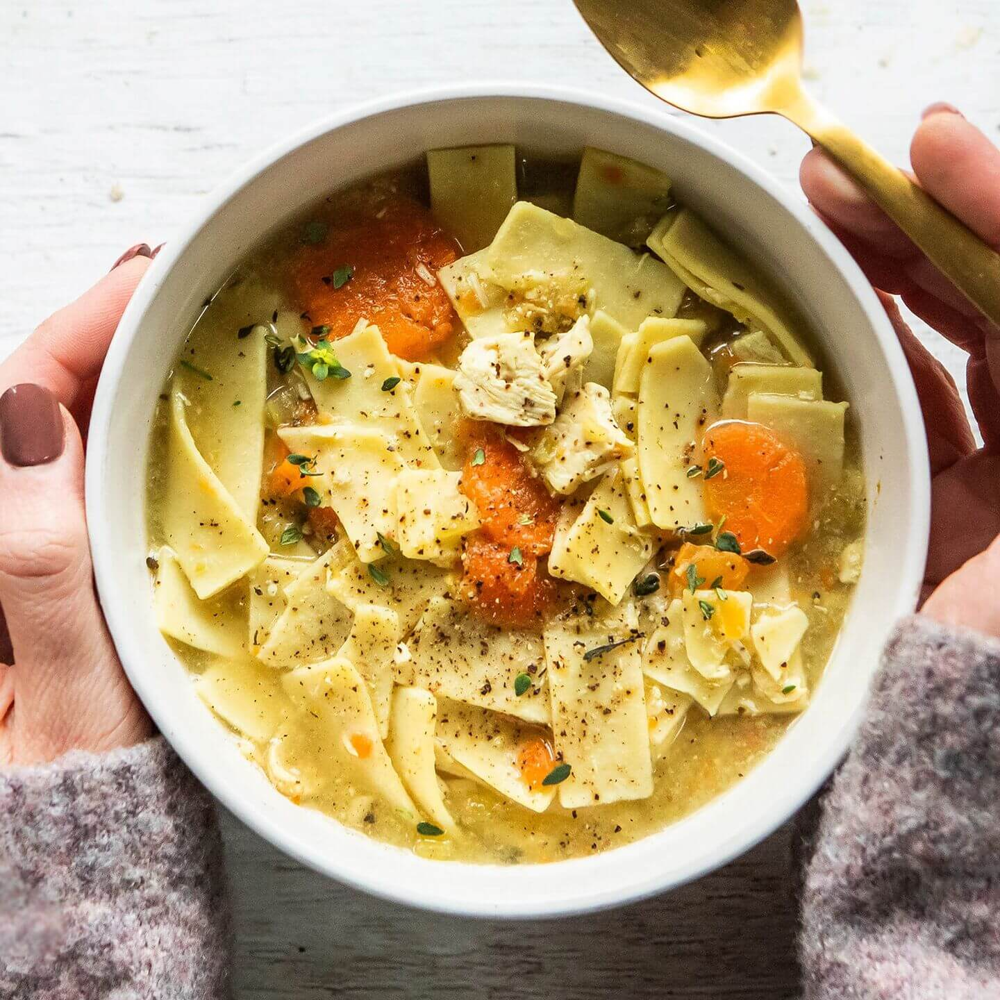

Lasagana Recipe

Ingredients
- 3 chicken breasts, diced
- 3 large carrots, peeled and sliced
- 3 celery, diced
- 1/2 white or yellow onion, diced
- 3 cloves garlic
- 1 Tbsp dried basil
- 3 (32 oz) cans chicken stock
- 1 chicken bouillon
- 2 eggs
- 2/3 cup flour
- Pinch salt
- Place chicken, carrots, celery, onion, garlic, basil, chicken stock and boullion into slow cooker.
- Cover and cook on high for 6 hours, or on low for 7-8 hours
- In a small bowl, whisk eggs until well beaten, then slowly use a fork to work in flour until a soft, non-sticky dough is formed
- Roll dough out very thin, use extra flour, if needed, to keep from sticking. For best results, roll between two pieces of parchment using a rolling pin
- emove top piece of parchment and use a knife or pizza cutter to cut dough into 1/4”x1” noodles
- Allow to airdry until soup is finished cooking.